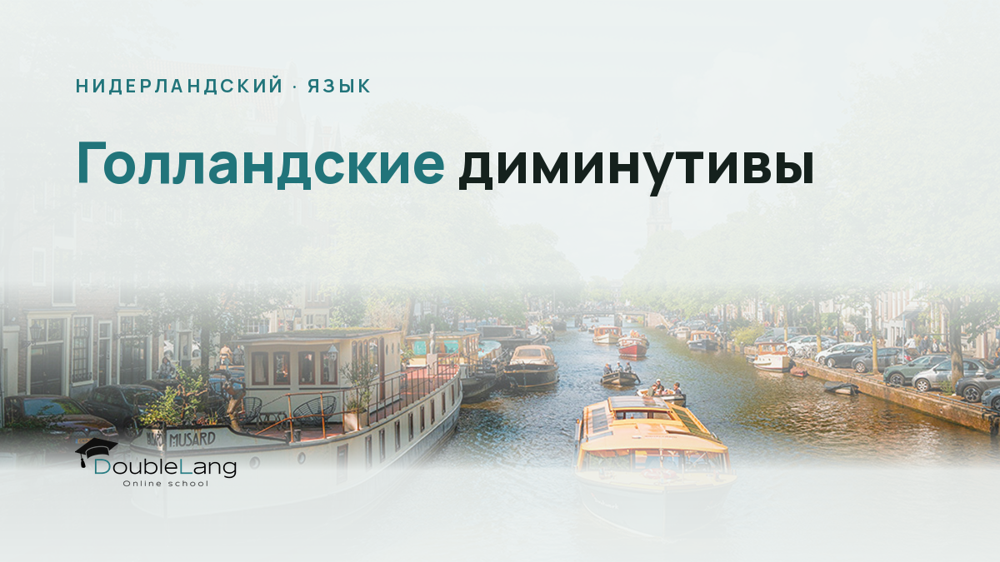

Когда вы начинаете общаться с носителями нидерландского, первое, что бросается в глаза, это обилие слов с суффиксами -je, -tje, -pje. Голландцы добавляют их к существительным так часто, что порой кажется: весь мир вокруг превратился в миниатюрную версию самого себя. Диминутивы в нидерландском языке выполняют десятки функций, от буквального уменьшения размера до выражения нежности, иронии или вежливости.
Если вы пытались заказать в кафе «kopje koffie» вместо просто «kop koffie», или слышали, как голландец говорит «een momentje» вместо «een moment», вы уже столкнулись с этой особенностью языка. Для русскоязычных студентов диминутивы часто становятся камнем преткновения: мы привыкли, что уменьшительно-ласкательные суффиксы используются ограниченно, а в нидерландском они проникают буквально везде. Давайте разберёмся, как устроена эта система, зачем она нужна в разговорной речи и как её правильно использовать.
Что такое диминутивы и зачем они голландцам
Диминутив, это уменьшительная форма существительного. В нидерландском языке её образуют при помощи суффиксов, самые распространённые из которых: -je, -tje, -pje, -kje и -etje. На первый взгляд всё просто: добавил суффикс, получил «маленькую версию» предмета. Но на практике уменьшительные суффиксы нидерландский язык использует не только для обозначения размера.
Голландцы применяют диминутивы, чтобы:
- Выразить нежность или ласку: «kindje» (малыш), «poesje» (кошечка).
- Смягчить просьбу или сделать её более вежливой: «Heb je een vraagje?» (У тебя вопросик?) звучит мягче, чем «Heb je een vraag?».
- Показать иронию или пренебрежение: «mannetje» может означать «человечек» в уничижительном смысле.
- Обозначить действительно маленький размер: «huisje» (домик), «boompje» (деревце).
- Просто добавить разговорности: в неформальной речи диминутивы звучат естественнее, особенно в устойчивых выражениях вроде «gezellig avondje» (уютный вечерок).
Исследования показывают, что носители нидерландского используют диминутивы в несколько раз чаще, чем носители других германских языков. Это культурная особенность: голландцы ценят неформальность, directheid (прямоту) и gezelligheid (уют), и диминутивы помогают создать нужную атмосферу в разговоре.
Важно: Все диминутивы в нидерландском принимают артикль het, независимо от рода исходного слова. Даже если у вас было «de tafel» (стол), уменьшительная форма будет «het tafeltje». Это одно из немногих правил, которое работает без исключений.
Образование диминутивов нидерландский: правило выбора суффикса
Главная сложность для студентов, это понять, какой именно суффикс je в нидерландском использовать. Выбор зависит от того, на какой звук заканчивается основа слова. Эта система может показаться запутанной, но она подчиняется чётким фонетическим правилам.
Суффикс -je: базовый вариант
Суффикс -je добавляется к словам, которые заканчиваются на -e, -el, -em, -en, -er, а также к словам с долгими гласными или дифтонгами в последнем слоге:
- tafel → tafeltje (столик)
- naamkaart → naamkaartje (визитка, буквально «карточка с именем»)
- jongen → jongetje (мальчик, в уменьшительной форме)
- school → schooltje (школка)
Обратите внимание: если слово уже заканчивается на -e, вы просто добавляете -tje, а не -je. Это важный нюанс, который часто упускают начинающие.
Суффикс -tje: после долгих гласных
Когда слово заканчивается на долгий гласный звук (aa, ee, oo, uu) или дифтонг (au, ou, ei, ij, ui, eu, oe), используется -tje:
- auto → autootje (машинка)
- boom → boompje (деревце, но здесь вступает другое правило, о нём ниже)
- cadeau → cadeautje (подарочек)
- ei → eitje (яичко)
Здесь есть тонкость: иногда при добавлении суффикса меняется написание основы, чтобы сохранить правильное произношение. Например, «boom» превращается в «boompje», а не «boomtje», потому что после долгого гласного перед -je нужна согласная.
Суффикс -pje: после m
Если слово заканчивается на -m, используется суффикс -pje:
- boom → boompje (деревце)
- bloem → bloempje (цветочек)
- bezem → bezempje (метёлка)
Это правило помогает сохранить благозвучие: «boem-tje» звучало бы неудобно, а «boempje» произносится легко.
Суффикс -kje: после ng
Слова, оканчивающиеся на -ng, принимают суффикс -kje:
- ring → ringetje (колечко)
- koning → koninkje (королёк, но это редкое слово)
- wandeling → wandelingetje (прогулочка)
Здесь звук [ŋ] (как в слове «ring») требует согласного k для плавного перехода к -je.
Суффикс -etje: после короткого гласного с одной согласной
Если слово заканчивается на короткий гласный плюс одна согласная (например, -l, -n, -r), часто добавляется -etje, и при этом удваивается конечная согласная, чтобы сохранить краткость гласного:
- bal → balletje (мячик)
- man → mannetje (человечек, самец животного)
- dier → diertje (зверёк)
Это правило связано с орфографией нидерландского языка: если бы мы написали «bale», гласный a стал бы долгим, а нам нужно сохранить короткий звук, поэтому удваиваем согласную.
| Окончание слова | Суффикс | Пример | Диминутив |
|---|---|---|---|
| -e, -el, -em, -en, -er | -je | tafel | tafeltje |
| Долгий гласный / дифтонг | -tje | auto | autootje |
| -m | -pje | boom | boompje |
| -ng | -kje | ring | ringetje |
| Короткий гласный + 1 согласная | -etje (удвоение согласной) | bal | balletje |
Разница между je и tje в нидерландском
Многие студенты спрашивают: в чём принципиальная разница между je и tje в нидерландском? Ответ прост: это варианты одного суффикса, выбор зависит только от фонетики исходного слова. Если слово уже заканчивается на -e, вы добавляете -tje (потому что два -e подряд невозможны), если на согласную, чаще используется -je, но с учётом правил выше.
На практике это означает, что вам нужно не зубрить каждое слово, а понять общую логику звучания. Произнесите слово вслух, добавьте суффикс и послушайте, как оно звучит. Голландцы сами руководствуются именно слухом, а не формальными правилами, поэтому тренировка на слух здесь критична.
Исключения в образовании диминутивов нидерландский
Как и в любом языке, в нидерландском есть исключения в образовании диминутивов нидерландский. Некоторые слова меняют основу или используют непредсказуемые формы.
Примеры исключений:
- dag (день) → dagje (денёк), но в значении «выходной день» часто говорят «een vrij dagje».
- weg (дорога) → weggetje (дорожка), удваивается g.
- glas (стакан) → glaasje (стаканчик), удлиняется гласный и добавляется -je.
- schaap (овца) → schaapje (овечка), здесь нет изменений, просто -je.
Кроме того, некоторые слова имеют устоявшиеся диминутивные формы, которые используются чаще, чем базовая форма. Например, «kopje» (чашечка) встречается в разговорной речи гораздо чаще, чем «kop» (чашка), особенно в контексте «kopje koffie» или «kopje thee». Это уже грамматика плюс культурный контекст. разговорного нидерландского языка, который вы осваиваете на курсах и в общении с носителями.
Внимание: Не переусердствуйте с диминутивами в формальной речи. В деловой переписке или официальных документах они неуместны. Если вы пишете email чиновнику (о чём мы говорили в статье про голландскую деловую переписку), используйте нейтральные формы существительных.
Как понять, когда использовать уменьшительный суффикс в нидерландском
Самый сложный вопрос для студентов, это не «как образовать», а «когда использовать» диминутивы. Грамматика нидерландского языка даёт вам инструмент, но понимание контекста приходит только с практикой.
Ситуации, где диминутивы обязательны или крайне желательны
В некоторых устойчивых выражениях диминутив, это норма, и без него фраза будет звучать странно или даже грубо:
- «Een momentje, alstublieft» (Одну минуточку, пожалуйста) - стандартная вежливая фраза.
- «Kopje koffie» (чашечка кофе) - почти всегда говорят именно так, а не «kop koffie».
- «Beetje» (немножко) - от «beet» (кусочек), используется постоянно: «een beetje water», «een beetje moe».
- «Dagje uit» (день вне дома, вылазка) - устоявшееся выражение для обозначения короткой поездки или экскурсии.
В разговоре с детьми или о детях диминутивы используются почти автоматически: «kindje», «jongetje», «meisje» (девочка, которое само по себе уже диминутив от устаревшего «meid»).
Когда диминутивы выражают эмоцию
Голландцы добавляют уменьшительные суффиксы, чтобы показать своё отношение. Если вы говорите «Wat een leuk huisje!» (Какой милый домик!), вы не обязательно имеете в виду, что дом маленький, вы выражаете восхищение или умиление. Это особенно характерно для разговорного нидерландского языка.
Ирония и сарказм тоже передаются через диминутивы. Фраза «Wat een leuk mannetje» может означать как «милый человечек» (о ребёнке), так и ироничное «ну и типчик» (о взрослом). Здесь всё зависит от интонации и контекста.
Вежливость и смягчение
Если вам нужно о чём-то попросить или сообщить не очень приятную новость, диминутив помогает смягчить удар:
- «Ik heb een probleempje» (У меня небольшая проблемка) - звучит менее драматично, чем «Ik heb een probleem».
- «Kun je een vraagje beantwoorden?» (Можешь ответить на вопросик?) - мягче, чем просто «vraag».
Это культурная особенность: голландцы ценят прямоту, но при этом стараются не быть грубыми. Диминутивы, это один из способов сохранить баланс.
Множественное число и другие грамматические тонкости
Когда вы освоили образование единственного числа, возникает вопрос: как образовать множественное число диминутивов? Правило простое: к диминутиву в единственном числе добавляется окончание -s.
Примеры:
- huisje → huisjes (домики)
- kopje → kopjes (чашечки)
- boompje → boompjes (деревца)
- autootje → autootjes (машинки)
Никаких исключений здесь нет: все диминутивы во множественном числе получают -s, в отличие от обычных существительных, которые могут принимать -en. Это упрощает задачу, но не забывайте, что артикль для множественного числа диминутивов будет «de», как и для всех существительных во множественном числе.
Ещё одна важная деталь: диминутивы не изменяются по родам и не имеют особых форм. Единственное, что меняется, это артикль (всегда het в единственном числе) и окончание множественного числа.
Упражнения на диминутивы нидерландский язык
Теория без практики превращается в мёртвый груз. Чтобы действительно освоить grammar нидерландский диминутив, вам нужны регулярные упражнения. Вот несколько типов заданий, которые помогут закрепить материал.
Шаг 1. Образуйте диминутивы от списка слов
Возьмите 20-30 существительных разных типов (с разными окончаниями) и образуйте от них уменьшительные формы. Проверьте себя по словарю или при помощи преподавателя. Обращайте внимание на суффикс, основу слова (удвоение согласных, изменение гласных) - всё имеет значение.
Шаг 2. Переведите фразы с диминутивами
Найдите или составьте 10-15 предложений на русском с уменьшительно-ласкательными формами («чашечка чая», «маленький домик», «милый котик») и переведите их на нидерландский. Затем сделайте обратное: переведите нидерландские фразы с диминутивами на русский, стараясь передать эмоциональный оттенок.
Шаг 3. Слушайте и выписывайте диминутивы
Включите подкаст или видео на нидерландском языке (желательно неформальное, например, влог или интервью) и выписывайте все диминутивы, которые услышите. Попробуйте понять по контексту, какую функцию они выполняют: уменьшение размера, ласку, иронию или вежливость. Это отличный способ увидеть, как носители используют диминутивы в живой речи.
Шаг 4. Составьте диалоги с диминутивами
Напишите короткий диалог (5-7 реплик) на бытовую тему: заказ в кафе, разговор с соседом, общение с ребёнком. Постарайтесь естественно вписать 3-5 диминутивов. Затем прочитайте диалог вслух, обращая внимание на интонацию и произношение суффиксов.
Шаг 5. Работа с ошибками
Попросите преподавателя проверить ваши тексты или устные ответы и выписать все случаи, где вы неправильно образовали или использовали диминутивы. Разберите каждую ошибку: в чём была проблема (выбор суффикса, контекст, орфография) и как исправить. Ведите список проблемных слов и периодически повторяйте их.
На платформе DoubleLang вы можете использовать тренажёр Lotte AI для отработки грамматических конструкций, включая образование диминутивов. Тренажёр даёт мгновенную проверку и объясняет грамматические ошибки, что особенно полезно на начальном этапе. Но помните: диминутивы - это грамматика и культурный код одновременно, поэтому работа с живым преподавателем на индивидуальных занятиях незаменима.
Диминутивы в контексте экзаменов и повседневной жизни
Если вы готовитесь к Inburgering или Staatsexamen NT2, вам нужно уметь образовывать диминутивы, узнавать их в текстах и аудиофрагментах. В части Lezen (чтение) и Luisteren (аудирование) диминутивы встречаются регулярно, особенно в неформальных текстах: объявлениях, SMS, интервью.
В устной части экзамена (Spreken) использование диминутивов может добавить естественности вашей речи, но злоупотреблять ими не стоит. Если ситуация формальная (например, разговор с работодателем или чиновником), лучше обойтись нейтральными формами. В неформальном диалоге (разговор с другом, в магазине) уместное использование диминутивов покажет, что вы чувствуете язык.
В письменной части (Schrijven) диминутивы уместны в личных письмах или неформальных email, но в эссе или официальном запросе их лучше избегать. Это та самая гибкость, которую экзаменаторы оценивают высоко: умение переключаться между регистрами речи.
В повседневной жизни в Нидерландах вы будете слышать диминутивы постоянно: в супермаркете («zakje» для пакетика), в кафе («broodje» для булочки/сэндвича), в разговоре с коллегами («mailtje» для короткого email). Понимание этих форм критически важно для интеграции, и чем раньше вы начнёте их активно использовать, тем быстрее ваша речь станет звучать естественно.
Частые вопросы
Как образуются диминутивы в нидерландском языке?
Диминутивы образуются при помощи суффиксов -je, -tje, -pje, -kje или -etje, которые добавляются к основе существительного. Выбор суффикса зависит от последнего звука слова: после -m используется -pje, после -ng добавляется -kje, после долгих гласных, -tje, а в большинстве остальных случаев -je. Иногда при добавлении суффикса удваивается конечная согласная или меняется написание для сохранения правильного произношения.
Почему голландцы используют уменьшительные суффиксы?
Голландцы используют диминутивы для выражения нежности, ласки, вежливости, иронии или просто для смягчения высказывания. Уменьшительные формы помогают создать неформальную, дружелюбную атмосферу в разговоре, что соответствует голландской культуре directheid и gezelligheid. Кроме того, некоторые диминутивы стали устойчивыми выражениями и используются чаще, чем базовая форма слова.
Какой суффикс выбрать: je или tje?
Выбор между -je и -tje зависит от окончания слова. Если слово заканчивается на -e, используется -tje (например, tafel → tafeltje). Если слово оканчивается на долгий гласный или дифтонг, также добавляется -tje (auto → autootje). В остальных случаях чаще используется -je, но с учётом других фонетических правил (например, после -m будет -pje). Лучший способ, произнести слово вслух и прислушаться к звучанию.
Какой артикль у диминутива в нидерландском?
Все диминутивы в единственном числе принимают артикль het, независимо от рода исходного существительного. Даже если исходное слово было с артиклем de (например, de tafel), его уменьшительная форма будет het tafeltje. Во множественном числе диминутивы, как и все существительные, используют артикль de.
Как образовать множественное число диминутива?
Множественное число диминутивов образуется простым добавлением окончания -s к форме единственного числа: huisje → huisjes, kopje → kopjes, autootje → autootjes. Исключений из этого правила нет. При этом артикль меняется с het на de, как и у всех существительных во множественном числе.
Зачем в нидерландском языке столько уменьшительных слов?
Обилие диминутивов в нидерландском языке отражает культурные особенности голландцев: стремление к неформальности, умение смягчать прямоту высказываний и создавать уютную атмосферу в общении. Диминутивы выполняют грамматическую и прагматическую функцию: помогают выразить эмоции, вежливость или иронию. Это делает нидерландский язык более гибким и эмоционально насыщенным в повседневной речи.
Почему диминутивы остаются с вами навсегда
Когда вы только начинаете изучать нидерландский, диминутивы кажутся ещё одной грамматической головоломкой в длинном списке правил. Но по мере погружения в язык вы заметите, что именно они делают вашу речь живой, естественной и по-настоящему голландской. Это не просто словообразование, это способ думать и чувствовать на языке.
Практикуйтесь регулярно: слушайте подкасты, читайте неформальные тексты, общайтесь с носителями и не бойтесь ошибаться. Каждый раз, когда вы правильно используете «kopje koffie» или «momentje», вы делаете шаг к тому, чтобы звучать не как учебник, а как человек, который действительно живёт на этом языке. И помните: даже носители иногда спотыкаются на диминутивах сложных слов, так что вы в хорошей компании.
На индивидуальных занятиях в DoubleLang преподаватель поможет вам отработать грамматику, интонацию, контекст и культурные нюансы использования диминутивов. Потому что язык, это не набор правил, это живой инструмент, которым вы учитесь пользоваться каждый день. Удачи в практике!
Сделайте первый шаг к вашей цели
Запишитесь на пробное занятие в DoubleLang и получите индивидуальный план подготовки к экзамену и переезду от наших методистов.
Записаться на пробный урокИли посмотрите, как проходят занятия: Нидерландский язык в DoubleLang.